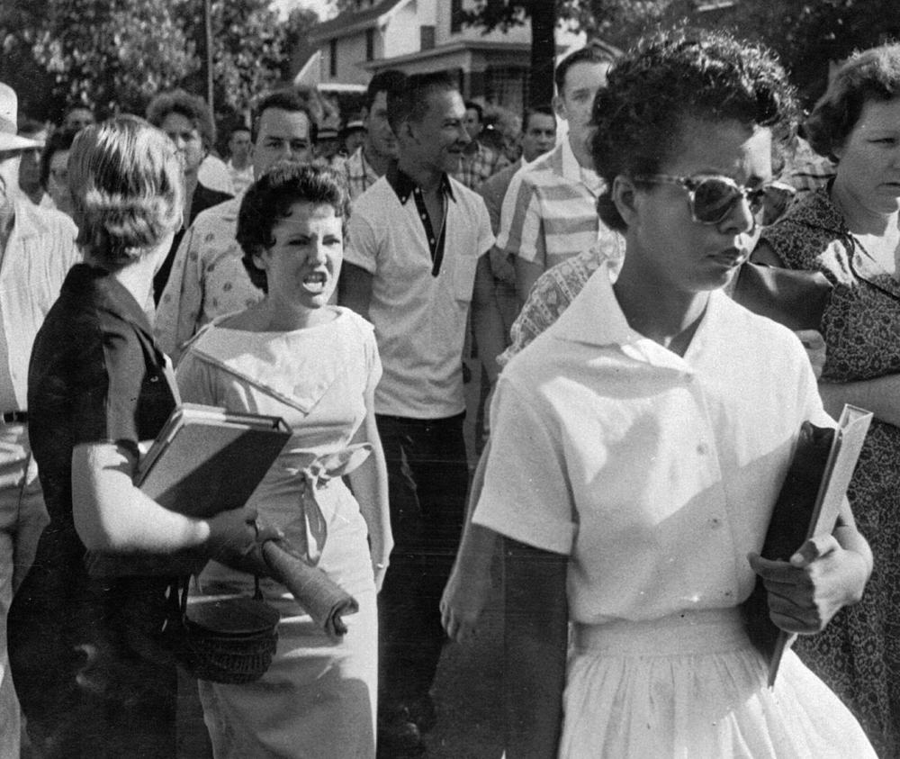
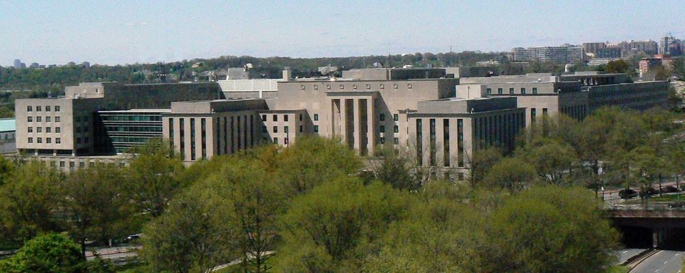

故事
美國政府曾經把爵士樂手派出國，當成外交武器。五十年代冷戰，美國和蘇聯在全世界搶朋友。1956 年，美國國務院第一次出錢，送 Dizzy Gillespie 的樂團出國巡演。
他們去了伊朗、巴基斯坦、土耳其和希臘。後來 Louis Armstrong、Duke Ellington、Dave Brubeck 也都被派了出去。這些樂手被叫做爵士大使。

諷刺的是，有些黑人樂手在自己國家，還住不進白人的旅館。1957 年，Armstrong 為了小岩城的學校事件，一度拒絕出國巡演。爵士變成一種很複雜的外交，既是宣傳，也是抗議。下次聽到爵士樂手的世界巡演，想想冷戰時的那些大使。
故事後面
五十年代冷戰，美國國務院出錢送爵士樂手出國巡演，想展示美國的自由文化。第一位是 Dizzy Gillespie。
後來 Louis Armstrong、Duke Ellington、Dave Brubeck 也被派出去。諷刺的是，有些黑人樂手在自己國家仍受種族隔離。
一九五七年，Armstrong 為了小岩城學校事件一度拒絕出國巡演，讓這場「爵士外交」更加複雜。

這樣聽
這首是 Brubeck 在土耳其聽到街頭節奏後寫的，聽開頭不規則的拍子。
逐句英文
The US government once sent jazz musicians abroad as a diplomatic weapon.
In the 1950s Cold War, the US and the Soviet Union competed for friends worldwide.
In 1956 the State Department funded its first tour, sending Dizzy Gillespie's band abroad.
They went to Iran, Pakistan, Turkey and Greece.
Later Louis Armstrong, Duke Ellington and Dave Brubeck were sent out too.
They became known as the jazz ambassadors.
Ironically, some Black musicians still couldn't stay in white hotels at home.
In 1957 Armstrong briefly refused a State Department tour over the Little Rock school crisis.
Jazz became a complicated kind of diplomacy, both propaganda and protest.
Next time you hear of a jazz world tour, think of the Cold War ambassadors.
查證筆記與出處
一九五六年 Dizzy 巡演國家：常見記載還包括黎巴嫩、南斯拉夫等，稿裡只列四國。Armstrong 一九五七年取消的是蘇聯巡演。
https://en.wikipedia.org/wiki/Jazz_Ambassadors
https://en.wikipedia.org/wiki/Louis_Armstrong
一分鐘影片版在 Instagram @jazz101tw。